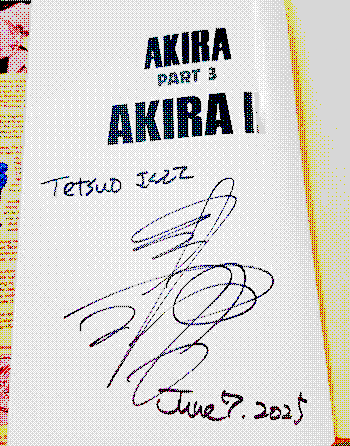
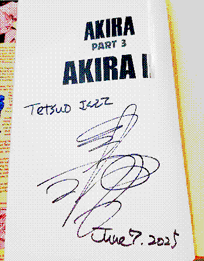

re: autograph 2025.06.07

HAHAHAHAHAHAHAHAHAHAHAHAHAHAHAHAHAHAHAHAHAHAHAHAHAHAHAHA

HAHAHAHAHAHAHAHAHAHAHAHAHAHAHAHAHAHAHAHAHAHAHAHAHAHAHAHA
big news. important enough that i'm dedicating a post on my stupid website about it. a friend of mine is visting a con to get a couple of items autographed by NOZOMU SASAKI. one of them being MY VOLUME 3 from the 35th anniversary box set
i traded them my volume 3 for reasons a while ago but i've been waiting to get it back next time they visit. the hardcover vol 3 you see on my akira page is actually their book. but i'm getting my original book back AND IT'S GONNA BE SIGNED BY NOZOMU SASAKI?! ??!!?! i can't fucking believe it.
i told them to make sure he signs the white page that says the volume title and part. a lot of Otomo autographs i've seen online are there, it's out of the way of most of the book. i'll 100% update my collection page with a picture. if there was more time i would've gone or given my friend something else from my collection. but the fact they still have my vol 3 works out
if Otomo ever came around and i could make it, i would bring vol 2 for him to sign. since it's my favorite and all that would be perfect. i can dream haha
updating my site scratched an itch i had. i like working on it but it feels complete right now. not much to do. i still need to finish taking collection pictures then my AKIRA shrine is 100% done. until my art of wall gacha arrives lol. i probably won't make a new page for a while after this. the AKIRA page took a lot.
i finished rereading volume 2 on may 25. i could talk about the notes i took and what i felt/thought and.... as fictionkin i kinda feel like its my obligation to share my personal experiences; the community already has so few resources and people talking about themselves seriously
but i don't like sharing THE personal stuff about my fictionkinity. i feel like part of this comes from the fact AKIRA itself already shows too much. whatever. i do wish i had a fur jacket. that thing gave me so much confidence. RIP fur jacket i stole from some expensive store that ill never remember the name of
today a year ago i made an account on neocities. my site looked like shit and now i don't think it looks like shit so much. on my about page i say that i didn't make a website because of social media and it's true. i made a site because i didn't want someone to take my username.
the only "coding" ive done before this was BBCode on forums. its like a lightweight html/css anyways. i cant remember if i tried to edit themes on tumblr. but now i know html/css. "know" theres more i could learn but i only do that if i want to make something that idk how to make already. i have 0 interest in learning to follow rules.
even if it wasn't the main reason, my opinion of social media shifted more since making my site. i still think it has its uses but for the most part i hate it. or i feel nothing for it. bluesky is OK i guess but the lack of privacy fucking SUCKS. tumblr might die or not or whatever. mastodon is a "bluesky backup" but do i care. it all feels pointless for someone like me but i keep it for some friends
well all i want to do with my site is keep it going. keep writing and posting art. add more pages or not, who knows. make more fan pages. i'll worry about that later when i have more ideas. i should finish my akira page and get to work photographing my AKIRA collection so people can see it